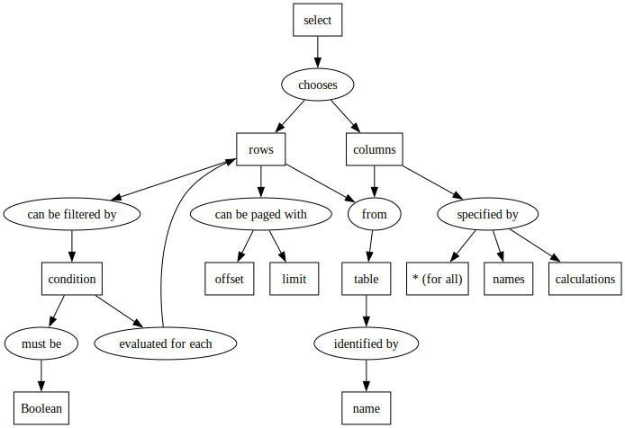

Why I Draw
People ask me why I draw diagrams by hand and then complain about not being able to diff and merge SVGs in version control. Well, I drew this diagram for the SQL tutorial I’ve been working on using draw.io:

Here it is in graphviz:

digraph select {
"select" -> "chooses";
"chooses" -> "rows";
"chooses" -> "columns";
"columns" -> "specified by";
"specified by" -> "names";
"specified by" -> "calculations";
"specified by" -> "* (for all)";
"columns" -> "from";
"rows" -> "from";
"from" -> "table";
"table" -> "identified by";
"identified by" -> "name";
"rows" -> "can be paged with";
"rows" -> "can be filtered by";
"can be paged with" -> "limit";
"can be paged with" -> "offset";
"can be filtered by" -> "condition";
"condition" -> "evaluated for each";
"evaluated for each" -> "rows";
"condition" -> "must be";
"must be" -> "Boolean";
"select" [shape=box];
"rows" [shape=box];
"columns" [shape=box];
"names" [shape=box];
"calculations" [shape=box];
"* (for all)" [shape=box];
"table" [shape=box];
"name" [shape=box];
"limit" [shape=box];
"offset" [shape=box];
"condition" [shape=box];
"Boolean" [shape=box];
}
and in Mermaid:

--- title: select --- flowchart LR A[select] B(chooses) C[rows] D[columns] E(specified by) F[names] G[calculations] H[for all] I(from) J[table] K(identified by) L[name] M(can be paged with) N(can be filtered by) O[limit] P[offset] Q[condition] R(evaluated for each) S(must be) T[Boolean] A --> B B --> C B --> D D --> E E --> F E --> G E --> H D --> I C --> I I --> J J --> K K --> L C --> M C --> N M --> O M --> P N --> Q Q --> R R --> C Q --> S S --> T
Never mind the layout of the graphviz and Mermaid diagrams or how much manual tweaking would be required to get them to be more compact; I simply don’t believe that diffing and merging the text used to generate them would be any easier than diffing and merging SVG. Whoever adds a real diagram editor to their computational notebook and provides a semantic (visual) way to diff changes to diagrams is going to clean house…